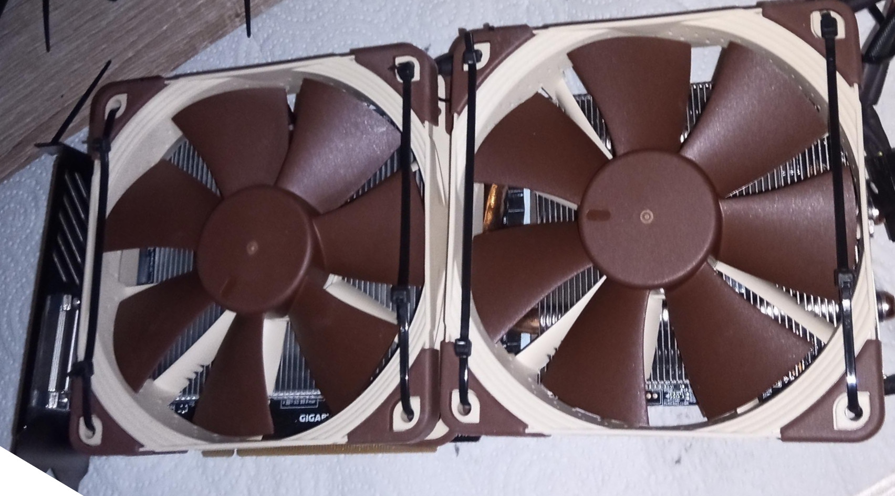

Gigabyte GTX 1080 G1 Gaming - BIOS-Mod Overclocking
I have a Gigabyte GTX 1080 G1 Gaming 8GB and it WAS AND STILL IS a great GPU BUT for some games it is too weak (Or the game is to badly optimized LOL). I use Linux with Wayland so I can not overclock it at the moment. Years ago on Winodws I tried, but I hit the GPU-BIOS power-limit and could not overclock any further. Today GPUs also try to overclock themselves as far as possible and Gigabyte GPUs often are already at there Stock-BIOS limit.
After a lot of research I found a way to unlock the power limit and make it run as fast as physically possible on Linux with Wayland. There is currently (2022.10.02) no way to modify the BIOS with a HEX-Editor or a BIOS-Editor due to Hash and certificate checking in (Hardware or Driver???) BUT there is an ASUS GPU-BIOS out there with no power-limit! It is known as the "T4 BIOS for Extreme Overclocking. Power limit removed". Its from a Asus GTX 1080 8 GB - STRIX OC GPU. Flashing different GPU-BIOSs can be dangerous, but as long as you stay within reason (not flashing a BIOS from an extremely customised GPU that has 4 Power input plugs and a custom fan controller, different amound/type of Video RAM, ...) you should be save. With this T4 Bios my GTX1080 got louder, faster and hungrier. Some readouts are wrong (stuff like power consumption and the current core clock are wrong) and one display port does not work on this T4-BIOS (The ASUS-GPU has 2-DP ports and 2-HDMI ports, the Gigabyte-GPU has 3-DP ports and only 1-HDMI port). I didn't try any other GTX1080-BIOS. Sadly the FLASHING on the GTX1080 is far less explored than on other GPUs. On the RTX-Cards you can find a lot of results for different combinations. You also should have an emergency GPU at hand (AMD/Intel iGPU or a different NVIDIA/AMD PCIE GPU) if something goes wrong and you need to flash back to stock. I would also recommend writing a batch file that executes the flash tool and then waits around 2 Minutes and then flashes back the Stock-BIOS. If something goes wrong and the GPU is SoftBricked you just need to wait around 120 seconds and the batch will save your GPU without needing a second GPU.
If you want to try it yourself I linked everything you need and what I used for my research in the "Sources:"-Section. I don't know how good the stock cooler with stock fans is in this case. My fans broke around a year ago and I cable tied 2 140mm Noctua fans on the stock cooler. Thx to that it still can be used and runs a lot cooler and quieter than with stock fans (see Image below). And for everyone who what's to know the new performance numbers:
Hardware: Gigabyte GTX 1080 G1 Gaming with Noctua-FANs - Linux on Wayland - Cyberpunk 2077 in 1440p - Medium with AMD FidelityFX on Quality:
Stock: 38-42FPS - 70°C - 180-190W - 1.830GHZ
T4-BIOS: 48-54FPS - 76-84°C - 200-233W - 2.100GHZ
Gigabyte GTX 1080 G1 Gaming with Noctua-FANs - Image:

Sources:
2022.10.02 - 14:50